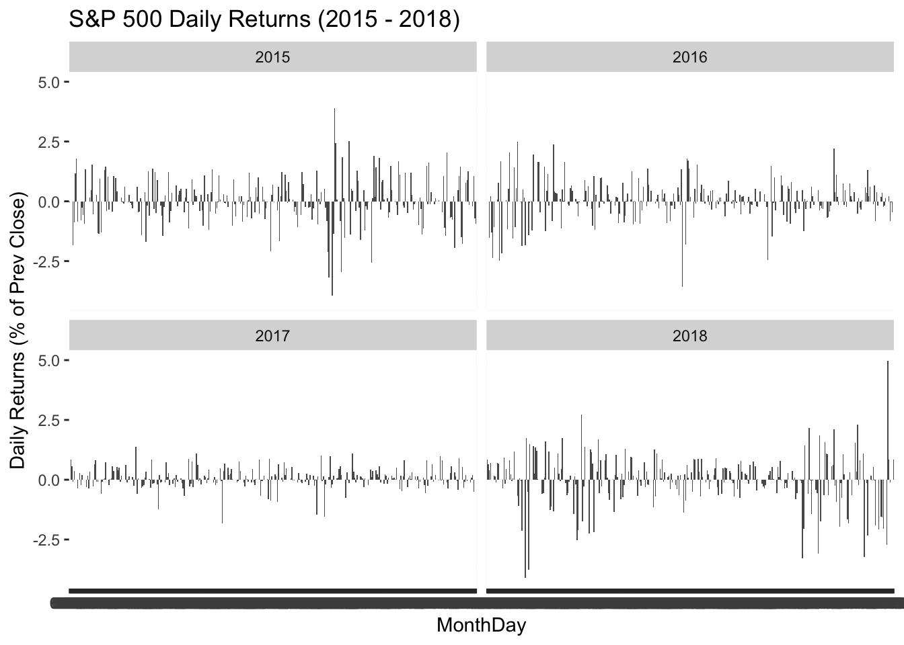
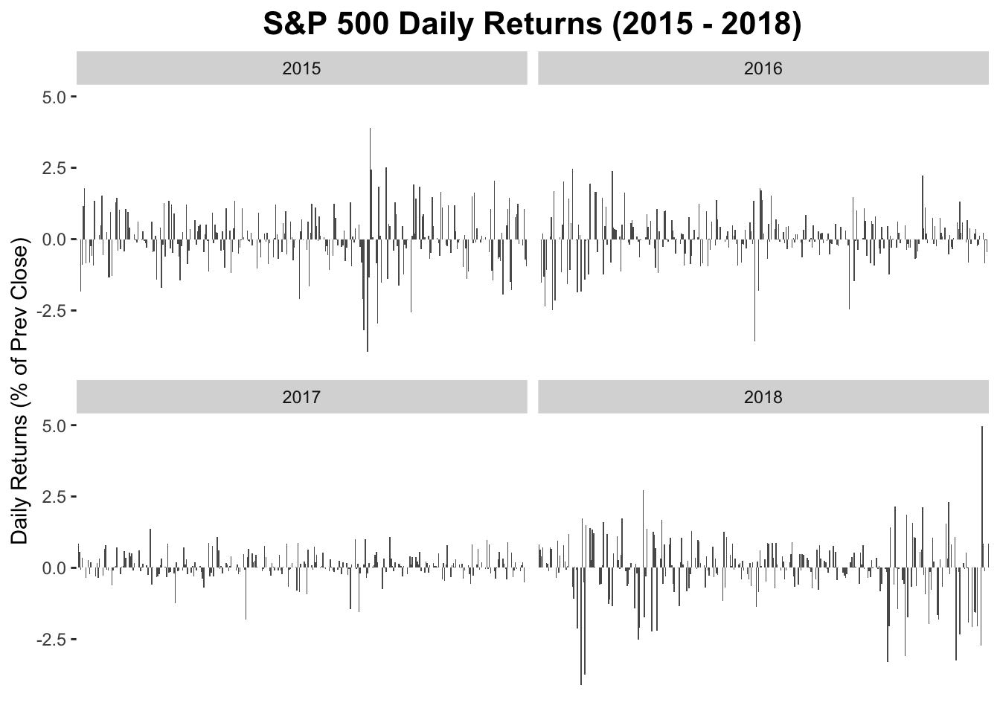
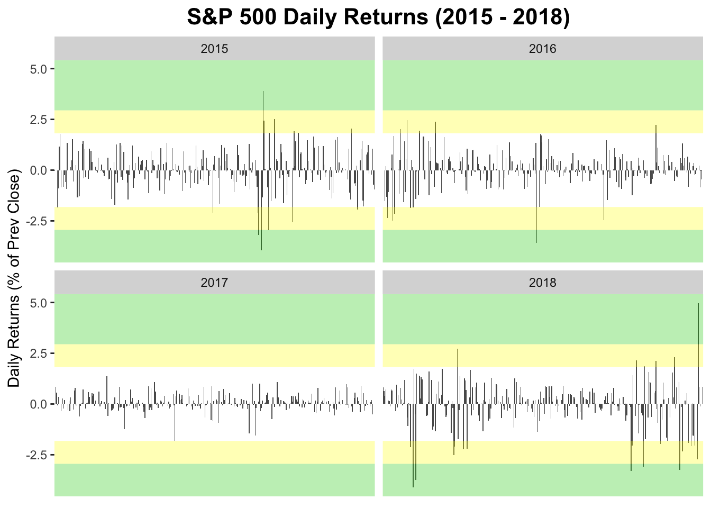
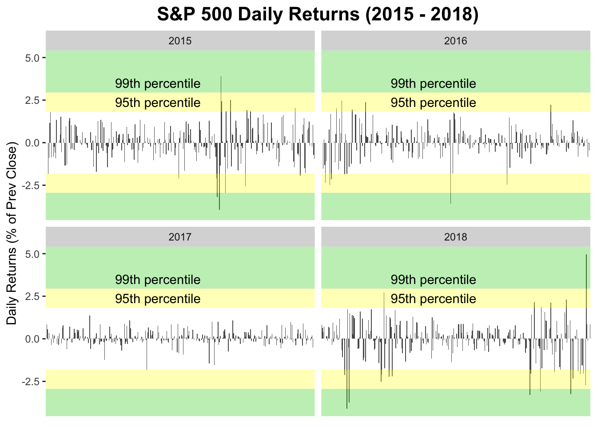

S&P 500 daily returns 2015 - 2018

Data
This plot uses the sp500 data frame of the gcubed package. Rows 250, 500, 750 and 1000 of the data frame are shown below.
library(gcubed)
sp500[c(250,500,750,1000),]## # A tibble: 4 x 12
## Month Day Year Open High Low Close `Adj Close` Volume PrevClose
## <int> <int> <int> <dbl> <dbl> <dbl> <dbl> <dbl> <dbl> <dbl>
## 1 12 29 2015 2061. 2082. 2061. 2078. 2078. 2.54e9 2056.
## 2 12 23 2016 2260. 2264. 2259. 2264. 2264. 2.02e9 2261.
## 3 12 21 2017 2683. 2693. 2682. 2685. 2685. 3.27e9 2679.
## 4 12 20 2018 2497. 2510. 2441. 2467. 2467. 5.59e9 2507.
## # … with 2 more variables: daily_return <dbl>, abs_ret <dbl>First, we will restrict the data to only those entries from the year 2018. Then we will create a new column, updown that will simply say whether or not each day’s return represented a gain or a loss. This will be used later to colour the bars of the plot.
## # A tibble: 4 x 13
## Month Day Year Open High Low Close `Adj Close` Volume PrevClose
## <int> <int> <int> <dbl> <dbl> <dbl> <dbl> <dbl> <dbl> <dbl>
## 1 12 29 2015 2061. 2082. 2061. 2078. 2078. 2.54e9 2056.
## 2 12 23 2016 2260. 2264. 2259. 2264. 2264. 2.02e9 2261.
## 3 12 21 2017 2683. 2693. 2682. 2685. 2685. 3.27e9 2679.
## 4 5 27 2015 2105. 2126. 2105. 2123. 2123. 3.13e9 2104.
## # … with 3 more variables: daily_return <dbl>, abs_ret <dbl>,
## # MonthDay <chr>Code for plot
We will use the geom_bar geometry to create this plot. The fill aesthetic_ will be used to colour the bars appropriately for positive and negative daily returns.
library(ggplot2)
sp_plt <- ggplot(data = df, aes(x = MonthDay, y = daily_return)) +
geom_bar(stat = "identity") +
facet_wrap(~Year) +
ylab("Daily Returns (% of Prev Close)") +
ggtitle("S&P 500 Daily Returns (2015 - 2018)")
sp_plt
At present the x-axis labels are from a categorical variable, MonthDay. The hundreds of overlapping values being displayed can be removed to de-clutter the lower portion of the plot.
sp_plt <- sp_plt +
theme(plot.title = element_text(size = 16, face = "bold", hjust = 0.5),
panel.background = element_blank(), axis.title.x=element_blank(),
axis.text.x = element_blank(), axis.ticks.x = element_blank())
sp_plt
To add bands representing 95th and 99th percentile moves, first we use determine what the 95th and 99th percentile moves are.
df$abs_return <- abs(df$daily_return)
head(df)## # A tibble: 6 x 14
## Month Day Year Open High Low Close `Adj Close` Volume PrevClose
## <int> <int> <int> <dbl> <dbl> <dbl> <dbl> <dbl> <dbl> <dbl>
## 1 1 2 2015 2059. 2072. 2046. 2058. 2058. 2.71e9 2059.
## 2 1 5 2015 2054. 2054. 2017. 2021. 2021. 3.80e9 2058.
## 3 1 6 2015 2022. 2030. 1992. 2003. 2003. 4.46e9 2021.
## 4 1 7 2015 2006. 2030. 2006. 2026. 2026. 3.81e9 2003.
## 5 1 8 2015 2031. 2064. 2031. 2062. 2062. 3.93e9 2026.
## 6 1 9 2015 2063. 2064. 2038. 2045. 2045. 3.36e9 2062.
## # … with 4 more variables: daily_return <dbl>, abs_ret <dbl>,
## # MonthDay <chr>, abs_return <dbl>pct95 <- quantile(df$abs_return, .95)
pct95## 95%
## 1.817147pct99 <- quantile(df$abs_return, .99)
pct99## 99%
## 2.945549The bands can be added using annotate to create the ribbons.
sp_plt <- sp_plt +
annotate("ribbon", ymin = pct95, ymax = pct99, x = c(-Inf,Inf), alpha = 0.3, fill = "95") +
annotate("ribbon", ymin = pct99, ymax = Inf, x = c(-Inf, Inf), alpha = 0.3, fill = "99") +
annotate("ribbon", ymax = -pct95, ymin = -pct99, x = c(-Inf,Inf), alpha = 0.3, fill = "95") +
annotate("ribbon", ymax = -pct99, ymin = -Inf, x = c(-Inf, Inf), alpha = 0.3, fill = "99")
sp_plt  To add the text, annotate can be used again. This time with the geom argument set to “text”.
sp_plt <- sp_plt +
annotate("text", label = "95th percentile", y = (pct95+pct99)/2, x = "06-01" ) +
annotate("text", label = "99th percentile", y = pct99 + (pct99-pct95)/2, x = "06-01")
sp_plt
The complete code for the plot
sp_plt <- ggplot(data = df, aes(x = MonthDay, y = daily_return)) +
geom_bar(stat = "identity") +
facet_wrap(~Year) +
ylab("Daily Returns (% of Prev Close)") +
ggtitle("S&P 500 Daily Returns (2015 - 2018)") +
theme(plot.title = element_text(size = 16, face = "bold", hjust = 0.5),
panel.background = element_blank(), axis.title.x=element_blank(),
axis.text.x = element_blank(), axis.ticks.x = element_blank()) +
annotate("ribbon", ymin = pct95, ymax = pct99, x = c(-Inf,Inf), alpha = 0.3, fill = "95") +
annotate("ribbon", ymin = pct99, ymax = Inf, x = c(-Inf, Inf), alpha = 0.3, fill = "99") +
annotate("ribbon", ymax = -pct95, ymin = -pct99, x = c(-Inf,Inf), alpha = 0.3, fill = "95") +
annotate("ribbon", ymax = -pct99, ymin = -Inf, x = c(-Inf, Inf), alpha = 0.3, fill = "99") +
annotate("text", label = "95th percentile", y = (pct95+pct99)/2, x = "06-01" ) +
annotate("text", label = "99th percentile", y = pct99 + (pct99-pct95)/2, x = "06-01")
sp_plt